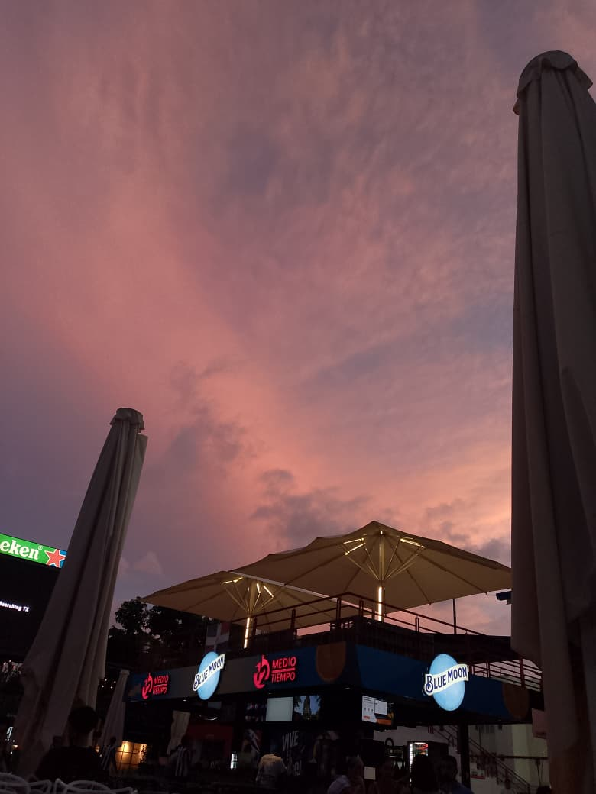
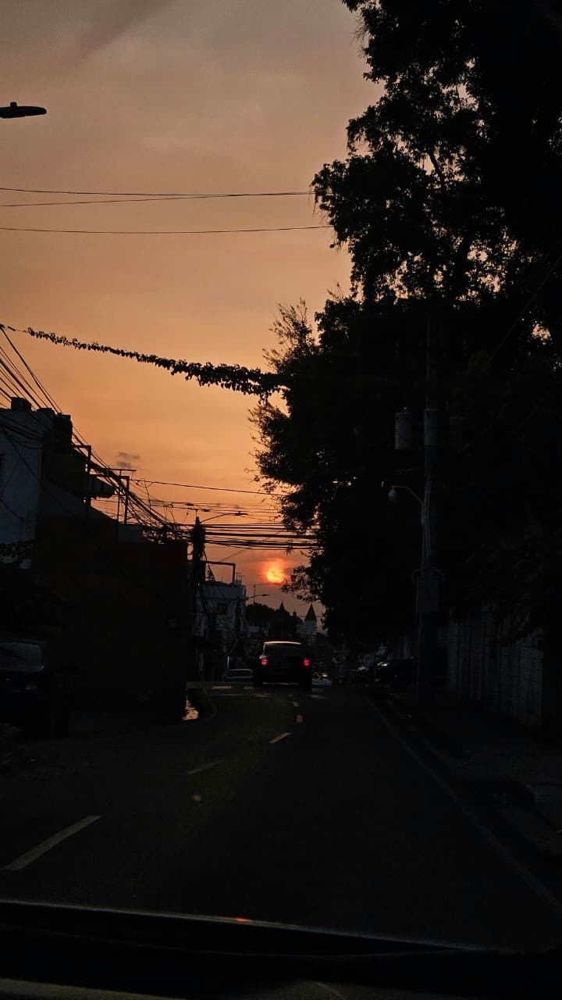

03 · 09
El arte de contemplar


Para ti.
Llegué a República Dominicana pensando que venía a vivir una aventura; otro país, otra rutina, nuevas personas y un tiempo que, desde el principio, sabía que tendría fecha de regreso, lo que no contemplé fue que, en medio de todo aquello que vine a conocer, terminaría encontrándome con alguien que no estaba en ningún itinerario.
Tú.
Y entonces el viaje siguió siendo el mismo, pero dejó de significar igual, República Dominicana dejó de ser solamente el lugar al que había venido a vivir una aventura, poco a poco se convirtió en una experiencia que voy a recordar por muchas razones, y tú terminaste siendo una de las más especiales.
Sin proponértelo, te convertiste en un lugar seguro para mí, y aunque siempre supe reconocer tu belleza, nunca fue eso lo que terminó haciéndote importante, fue encontrar a tu lado algo que para mí no resulta sencillo: la tranquilidad de ser yo.
Me conociste hablando de más, riendo, pensando demasiado, diciendo estupideces y también guardando silencio, incluso alcanzaste a conocer una parte de mí que pocas veces permito que alguien vea, y nunca sentí la necesidad de ser distinto frente a ti.
Yo tampoco quise cambiar mi posición frente a ti, no porque sintiera poco, sino porque entendí desde el principio que sentir algo nunca me daba derecho a alterar aquello que había decidido respetar, porque sentir es inevitable, la manera de llevarlo, no. Y quizá respetarte fue también una de mis formas más sinceras de quererte.
Hubo cosas que comprendí con absoluta claridad y que, aun así, nunca me fueron indiferentes. Jamás confundí lo que sentía con el lugar que me correspondía ocupar, ni concedí a una emoción la autoridad suficiente para alterar una realidad que siempre conocí. Algunas cosas tuvieron más peso del que alguna vez dejé ver, pero comprenderlas fue suficiente; no necesitaban una respuesta distinta para hacerlas menos ciertas, hay verdades que pueden aceptarse sin resistencia y conservar, aun así, todo su peso.
Hubo algo que siempre preferí conservar en silencio: la atención; esa extraña capacidad de reconocer lo mínimo sin necesidad de señalarlo: un gesto, una mirada, una palabra distinta; cosas demasiado pequeñas para explicarlas y suficientemente claras para quien sabía dónde mirar.
Quizá por eso nunca me interesó hacer demasiado ruido con mis detalles, lo importante no necesitaba que todos lo vieran, me bastaba con que llegara a quien debía llegar, hay cosas que no necesitan ser evidentes para ser importantes, solo necesitan los ojos correctos, tú supiste mirar.
Tal vez por eso nunca entendí los detalles desde el dinero ni desde aquello que cualquiera puede comprar, para mí siempre fueron otra cosa: escuchar, recordar, prestar atención y encontrar una manera distinta de hacerte saber que algo de ti no había pasado inadvertido, nunca quise impresionarte, quise que te sintieras vista.
Y en algún momento entendí también que muchas de nuestras mejores conversaciones nunca necesitaron un motivo importante solamente bastaba sentarnos, hablar de cualquier cosa y dejar que el tiempo hiciera lo suyo. Hasta el café terminó significando algo diferente, porque al final nunca fue el café, fue el momento.
Te quiero, prefiero dejar esa frase exactamente así, no necesito convertirla en una palabra más grande ni darle un nombre que no le corresponde, siento mucho desde un lugar consciente, limpio y tranquilo; sin hacer de lo que siento una responsabilidad tuya y sin necesitar un desenlace distinto para reconocer que es real para mí, porque sé que siempre he sido muy sincero conmigo mismo.
Entre tantos momentos hay uno que inevitablemente voy a guardar de una manera diferente: fui feliz de haber estado en tu fecha especial, pero aún más feliz de haber sentido mi fecha especial contigo, el día empieza a las 00:01; no por lo que hicimos ni por dónde estuvimos, lo que vale realmente.
Panamá ya formaba parte de mis recuerdos, quizá por eso fue particular reconocer algunos de ellos, esta vez, dentro de los tuyos. Agradecí la naturalidad con la que me permitiste contemplar desde lejos una parte de esos días, y, entre lugares conocidos y coincidencias inesperadas, terminé quedándome con algo mucho más simple: verte disfrutar, a veces eso basta.
Y hubo también una imagen tuya que guardé de una manera distinta, probablemente la más bonita que te haya visto, aunque lo verdaderamente especial no estuvo únicamente en lo que vi, sino en la confianza desde la que decidiste mostrármela, la admiré como admiro aquello que considero bello: con la suficiente cercanía para apreciarlo y el suficiente pudor para respetarlo, la cercanía nunca me pareció una licencia; por el contrario, cuanto mayor fue la confianza, mayor me pareció la responsabilidad de conservarla intacta.
Supongo que ahí terminé de entender que esta aventura se había convertido en otra cosa. Llegué sabiendo perfectamente qué había dejado en Colombia, lo que nunca contemplé fue que... cuando llegara el momento de regresar, también iba a dejar algo aquí.
Y quizá esa sea una de las cosas más bonitas que me llevo de este viaje: vine pensando que conocería otro lugar y termino regresando, entendiendo que, algunas veces, un lugar también puede ser una persona. Durante una parte de esta historia, tú eres esto para mí: uno de esos lugares a los que nunca se planea llegar, que tampoco creí conocer, pero que terminan formando parte del viaje mucho después de haberlos dejado atrás.
Pero irme tampoco significa convertir la distancia en un punto final, sería extraño despedirme de alguien de quien, en realidad, no quisiera despedirme, lo que sí termina es esta forma particular de coincidir: la cercanía, los lugares, las conversaciones que podían comenzar sin aviso y esas pequeñas complicidades que solo fueron posibles porque, durante un tiempo, compartimos el mismo pedazo de mundo, eso pertenece a estos meses, y precisamente por eso tiene valor.
Después, la vida encontrará su propia manera de acomodar las distancias, no necesito anticiparla ni exigirle continuidad a algo que siempre fue mejor cuando ocurrió con naturalidad, irme nunca significó querer borrarte de mi vida; significa simplemente aceptar que algunas cosas cambiarán cuando ya no estemos en el mismo lugar.
Las que tengan razones para permanecer encontrarán su propia manera de hacerlo, después de todo, lo más valioso de este tiempo nunca necesitó ser forzado.
Y hasta las fechas terminaron teniendo cierta ironía, llegué un 3 y me marcho un 3, no necesito explicar demasiado esa coincidencia; después de todo, siempre dijimos que las matemáticas podían ser bonitas.
La distancia no cambia mi lectura de lo vivido, lo que debía entender, lo entendí estando cerca; lo demás sería concederle a la ausencia un mérito que no le corresponde.
Por eso no quiero despedirme dejando preguntas, promesas ni palabras esperando una respuesta, nunca hice nada de esto para cambiar tu vida ni para cambiar el lugar que ocupaba en ella, simplemente hubo algo que para mí tuvo valor, y preferí reconocerlo mientras todavía podía hacerlo.
No sé qué hará el tiempo con nuestras conversaciones, con esas pequeñas complicidades o con todo aquello que alguna vez entendimos sin necesidad de decirlo, tampoco necesito saberlo, Hay cosas que pierden parte de su belleza cuando uno insiste demasiado en definirlas.
Así que me voy tranquilo, sabiendo que algo de mí se queda aquí y que, de alguna manera, algo de ti se viene conmigo.
Lo demás puede quedarse donde pertenecen aquellas cosas que significaron demasiado para olvidarlas y que nunca necesitaron pertenecerle a nadie más:
en el ático del alma.
No como una deuda.
No como una pregunta.
Ni siquiera como algo pendiente.
Simplemente como algo que valió la pena vivir.